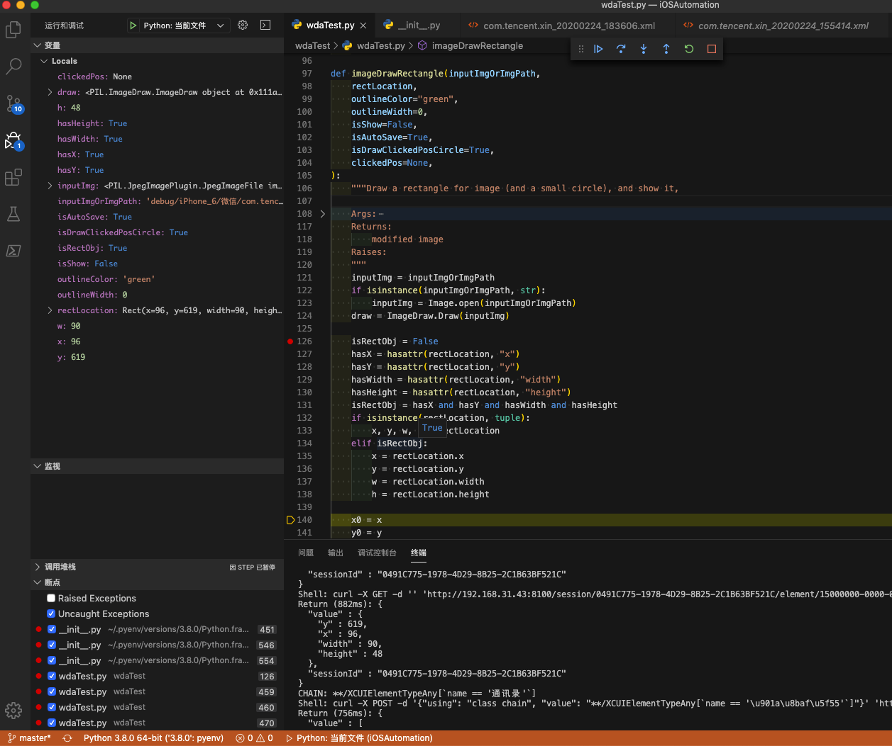

Python内置函数
Python中有很多内置的、自带的函数，功能很强大，很好用。现整理如下。
hasattr
举例说明hasattr的用法和效果：
背景
某函数输入的参数rectLocation有多种类型
tuple(x, y, width, height)
Rect的类- 有对应的属性
x,y,width,height
- 有对应的属性
希望实现
动态判断输入的参数是否有x,y,width,height的属性，从而得到变量的类型
如果有这些属性，再获取属性
否则就是tuple，直接获取值
实现代码
def imageDrawRectangle(inputImgOrImgPath,
rectLocation,
...
):
...
Args:
...
rectLocation (tuple/Rect): the rectangle location, (x, y, width, height)
...
"""
...
isRectObj = False
hasX = hasattr(rectLocation, "x")
hasY = hasattr(rectLocation, "y")
hasWidth = hasattr(rectLocation, "width")
hasHeight = hasattr(rectLocation, "height")
isRectObj = hasX and hasY and hasWidth and hasHeight
if isinstance(rectLocation, tuple):
x, y, w, h = rectLocation
elif isRectObj:
x = rectLocation.x
y = rectLocation.y
w = rectLocation.width
h = rectLocation.height
...

完整代码详见：
crifanLibPython/crifanMultimedia.py at master · crifan/crifanLibPython
附录
- 官网文档：
- Built-in Functions — Python 3.8.2rc2 documentation
hasattr(object, name)
The arguments are an object and a string. The result is True if the string is the name of one of the object’s attributes, False if not. (This is implemented by calling getattr(object, name) and seeing whether it raises an AttributeError or not.)
- 另外几个相关函数
getattr(object, name[, default])
Return the value of the named attribute of object. name must be a string. If the string is the name of one of the object’s attributes, the result is the value of that attribute. For example, getattr(x,'foobar') is equivalent to x.foobar. If the named attribute does not exist, default is returned if provided, otherwise AttributeError is raised.
delattr(object, name)
This is a relative of setattr(). The arguments are an object and a string. The string must be the name of one of the object’s attributes. The function deletes the named attribute, provided the object allows it. For example, delattr(x, 'foobar') is equivalent to del x.foobar.
setattr(object, name, value)
This is the counterpart of getattr(). The arguments are an object, a string and an arbitrary value. The string may name an existing attribute or a new attribute. The function assigns the value to the attribute, provided the object allows it. For example, setattr(x, 'foobar', 123) is equivalent tox.foobar = 123.
- Built-in Functions — Python 3.8.2rc2 documentation